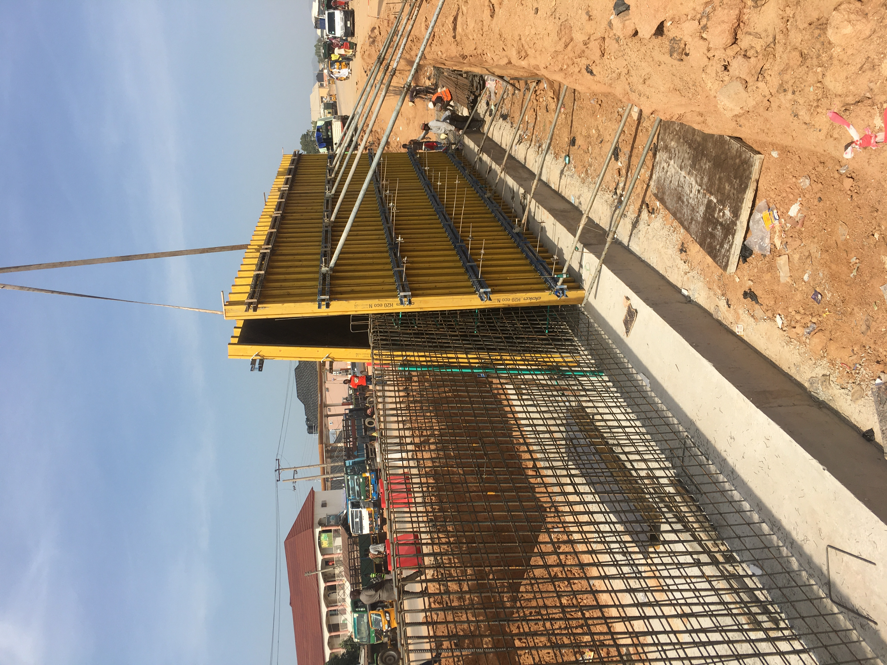

Welcome To Taraba Works
Stay up to date with projects accross Taraba State
About Taraba Works
Established on the 27th of August 1991 and saddled with the responsibility of supervising all Government road design, construction and maintenance, the Taraba Ministry of Works ensures that all infrastructure accross the state is built to the highest standards

Jalingo Dualization

Wuakri-Sukundi Road

Yorro-Pantisawa

Mararaba-Baissa-Abong
With Projects spanning accross the state, stay informed with weekly progress reports
See Projects